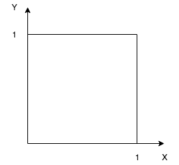

Probability Models and Axioms
Contents
Sample space
- Describe possible outcomes
- Describe beliefs about likelihood outcomes
Possible outcomes:
- List (set) of possible outcomes, \(\Omega\) (omega)
- List must be:
- Mutually exclusive
- Collectively exhaustive
- All the “right” granularity
Interpretation and uses of probabilities:
- Measure frequency of the event
- Description of beliefs / betting performance
Sample space: discrete/finite example
Table description
Sequential description
Two rolls of a tetrahedral die.
Sample space: continuous example
\((x, y)\) such that \(0 \leqslant x, y \leqslant 1\)
Probability axioms
- Event
- is a subset of the sample space. Probability is assigned to events
Axioms:
- Nonnegativity: \(P(A) \geqslant 0\)
- Normalization: \(P(\Omega) = 1\)
- (Finite) Additivity: if \(A \cap B = \varnothing\), then \(P(A \cup B) = P(A) + P(B)\)
Some simple consequences of the axioms:
- \(P(\varnothing) = 0\)
- \(P(A) + P(A^c) = 1\)
- if \(A_1, …, A_k\) disjoint, then \(P(A \cup … \cup A_k) = \sum_{i=1}^{k}P(A_i)\)
- \(P(\{S_1, S_2, …, S_k\}) = P(\{S_1\} \cup \{S_2\} \cup … \cup \{S_k\}) = P(\{S_1\}) + … P(\{S_k\}) = P(S_1) + … + P(S_k)\)
More consequences of the axioms:
- if \(A \subset B\), then \(P(A) \leqslant P(B)\) (img 1)
- \(P(A \cup B) = P(A) + P(B) - P(A \cap B) = P(A) + P(A^c \cap B)\) (img 2)
- \(P(A \cup B) \leqslant P(A) + P(B)\) - union bound
- \(P(A \cup B \cup C) = P(A) + P(A^c \cap B) + P(A^c \cap B^c \cap C)\) (img 3)
Probability calculations
Discrete finite example
Discrete uniform law:
- Assume \(\Omega\) finite consist of \(n\) equally likely elements
- Assume \(A\) consist of \(k\) elements, then
\(P(A) = k * frac{1}{n}\)
every outcome prob == \(\frac{1}{16}\)
- \(P(X = 1) = 4 * \frac{1}{16}\)
- let \(Z = min(X, Y)\)
- \(P(Z = 4) = 1/16\)
- \(P(Z = 2) = 5 * \frac{1}{16}\)
Discrete continuous example
Suppose we have \((x, y)\) such that \(0 \leq x, y, \leq 1\)
Uniform probability law: Probability = Area
\(P(\{(x, y) | x + y \leq 1/2 \})\) = triangle area = \(\frac{1}{2} * \frac{1}{2} * \frac{1}{2}\)
\(P(\{0.5, 0.3 \})\) = area of one point = \(0\)
Probability calculations step
- Specify sample space
- Specify a probability law
- Identify an event of interest(if possible - graphical way)
- Calculate …
Countable additivity
Let’s we have sample space \(\{1, 2, 3, … \}\)
\(P(n) = \frac{1}{2^n}, n=1, 2..\)
\(\sum_{n=1}^{\infty} \frac{1}{2^n} = \frac{1}{2} \sum_{n=0}^{\infty} \frac{1}{2^n} = \frac{1}{2} * \frac{1}{1 - 1/2} = 1\)
P(outcome is even) = \(P(\{2, 4, 6, … \} ) = P(\{2\} \cup \{4\} \cup ..) = P(2) + P(4) + .. =\)
\(= \frac{1}{2^2} + \frac{1}{2^4} + … = \frac{1}{4}(1 + \frac{1}{4} + \frac{1}{4^2} + …) = \frac{1}{4} * \frac{1}{1 - 1/4} = \frac{1}{3}\)
Countable additivity axiom
Strengthens the finite additivity axiom:
- if \(A_1, A_2. A_3\) is an finite sequence of disjoint events, then \(P(A_1 \cup A_2 \cup A_3 …) = P(A_1) + P(A_2) + P(A_3)\)
- additivity holds only for “countable” sequence of events
- the unit square(similarly the real line, etc.) is not countable. (It’s elements cannot be arranged in a sequence)
- “Area” is a legitimate probability law on the unit square, as long as we do not try to assign probabilities/areas to “very strange” sets